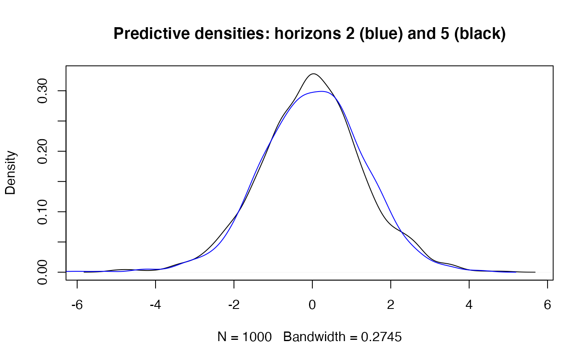

Predict GARCH(1,1) time series.
Usage
# S3 method for garch1c1
predict(object, n.ahead = 1, Nsim = 1000, eps, sigmasq, seed = NULL, ...)Arguments
- object
an object from class
"garch1c1".- n.ahead
maximum horizon (lead time) for prediction.
- Nsim
number of Monte Carlo simulations for simulation based quantities.
- eps
the time series to predict, only the last value is used.
- sigmasq
the (squared) volatilities, only the last value is used.
- seed
an integer, seed for the random number generator.
- ...
currently not used.
Value
an object from S3 class "predict_garch1c1" containing
the following components:
- eps
point predictions (conditional expectations) of the time series (equal to zero for pure GARCH).
- h
point predictions (conditional expectations)of the squared volatilities.
- model
the model.
- call
the call.
- pi_plugin
Prediction intervals for the time series, based on plug-in distributions, see Details.
- pi_sim
Simulation based prediction intervals for the time series, see Details.
- dist_sim
simulation samples from the predictive distributions of the time series and the volatilties.
Details
Plug-in prediction intervals and predictive distributions are obtained by inserting the predicted volatility in the conditional densities. For predictions more than one lag ahead these are not the real predictive distributions but the prediction intervals are usually adequate.
For simulation prediction intervals we generate a (large) number of
continuations of the given time series. Prediction intervals can be based on
sample quantiles. The generated samples are stored in the returned object and
can be used for further exploration of the predictive
distributions. dist_sim$eps contains the simulated future values of
the time series and dist_sim$h the corresponding (squared)
volatilities. Both are matrices whose i-th rows contain the predicted
quantities for horizon i.
The random seed at the start of the simulations is saved in the returned
object. A speficific seed can be requested with argument seed. In
that case the simulations are done with the specified seed and the old state
of the random number generator is restored before the function returns.
This setup is similar to sim_garch1c1.
Examples
op <- options(digits = 4)
## set up a model and simulate a time series
mo <- GarchModel(omega = 0.4, alpha = 0.3, beta = 0.5)
a1 <- sim_garch1c1(mo, n = 1000, n.start = 100, seed = 20220305)
## predictions for T+1,...,T+5 (T = time of last value)
## Nsim is small to reduce the load on CRAN, usually Nsim is larger.
a.pred <- predict(mo, n.ahead = 5, Nsim = 1000, eps = a1$eps,
sigmasq = a1$h, seed = 1234)
## preditions for the time series
a.pred$eps
#> [1] 0 0 0 0 0
## PI's for eps - plug-in and simulated
a.pred$pi_plugin
#> lwr upr
#> [1,] -2.484 2.484
#> [2,] -2.544 2.544
#> [3,] -2.591 2.591
#> [4,] -2.628 2.628
#> [5,] -2.658 2.658
a.pred$pi_sim
#> 2.5% 97.5%
#> [1,] -2.447 2.465
#> [2,] -2.662 2.559
#> [3,] -2.426 2.624
#> [4,] -2.538 2.370
#> [5,] -2.645 2.637
## a DIY calculation of PI's using the simulated sample paths
t(apply(a.pred$dist_sim$eps, 1, function(x) quantile(x, c(0.025, 0.975))))
#> 2.5% 97.5%
#> [1,] -2.447 2.465
#> [2,] -2.662 2.559
#> [3,] -2.426 2.624
#> [4,] -2.538 2.370
#> [5,] -2.645 2.637
## further investigate the predictive distributions
t(apply(a.pred$dist_sim$eps, 1, function(x) summary(x)))
#> Min. 1st Qu. Median Mean 3rd Qu. Max.
#> [1,] -3.922 -0.8366 -0.064571 -0.004804 0.8683 4.050
#> [2,] -6.755 -0.8333 0.055137 0.012828 0.8895 4.320
#> [3,] -5.198 -0.8541 -0.015145 -0.004674 0.8138 4.290
#> [4,] -3.786 -0.8596 -0.001705 -0.029519 0.7609 4.241
#> [5,] -5.000 -0.8314 -0.019039 -0.016285 0.7956 4.860
## compare predictive densities for horizons 2 and 5:
h2 <- a.pred$dist_sim$eps[2, ]
h5 <- a.pred$dist_sim$eps[5, ]
main <- "Predictive densities: horizons 2 (blue) and 5 (black)"
plot(density(h5), main = main)
lines(density(h2), col = "blue")

## predictions of sigma_t^2
a.pred$h
#> [1] 1.606 1.685 1.748 1.798 1.839
## plug-in predictions of sigma_t
sqrt(a.pred$h)
#> [1] 1.267 1.298 1.322 1.341 1.356
## simulation predictive densities (PD's) of sigma_t for horizons 2 and 5:
h2 <- sqrt(a.pred$dist_sim$h[2, ])
h5 <- sqrt(a.pred$dist_sim$h[5, ])
main <- "PD's of sigma_t for horizons 2 (blue) and 5 (black)"
plot(density(h2), col = "blue", main = main)
lines(density(h5))
## VaR and ES for different horizons
cbind(h = 1:5,
VaR = apply(a.pred$dist_sim$eps, 1, function(x) VaR(x, c(0.05))),
ES = apply(a.pred$dist_sim$eps, 1, function(x) ES(x, c(0.05))) )
#> h VaR ES
#> [1,] 1 2.077 2.593
#> [2,] 2 2.075 2.972
#> [3,] 3 2.106 2.651
#> [4,] 4 2.066 2.680
#> [5,] 5 2.167 2.886
## fit a GARCH(1,1) model to exchange rate data and predict
gmo1 <- fGarch::garchFit(formula = ~garch(1, 1), data = fGarch::dem2gbp,
include.mean = FALSE, cond.dist = "norm", trace = FALSE)
mocoef <- gmo1@fit$par
mofitted <- GarchModel(omega = mocoef["omega"], alpha = mocoef["alpha1"],
beta = mocoef["beta1"])
gmo1.pred <- predict(mofitted, n.ahead = 5, Nsim = 1000, eps = gmo1@data,
sigmasq = gmo1@h.t, seed = 1234)
gmo1.pred$pi_plugin
#> lwr upr
#> [1,] -0.7521 0.7521
#> [2,] -0.7643 0.7643
#> [3,] -0.7758 0.7758
#> [4,] -0.7867 0.7867
#> [5,] -0.7970 0.7970
gmo1.pred$pi_sim
#> 2.5% 97.5%
#> [1,] -0.7408 0.7466
#> [2,] -0.7688 0.7601
#> [3,] -0.7631 0.7760
#> [4,] -0.7539 0.7210
#> [5,] -0.7779 0.8050
op <- options(op) # restore options(digits)